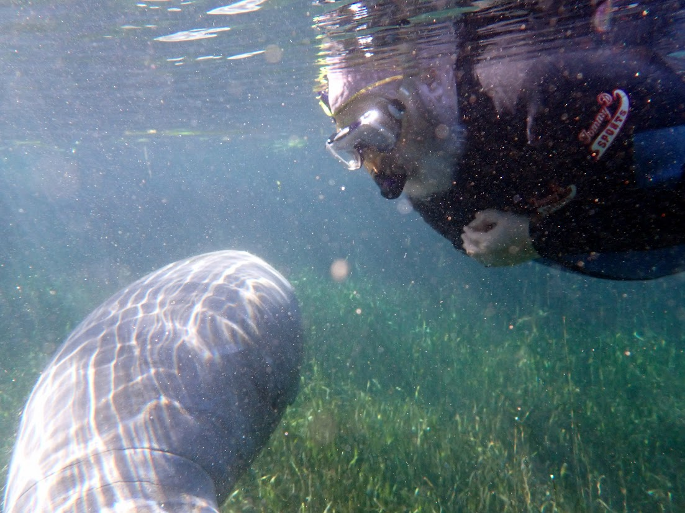
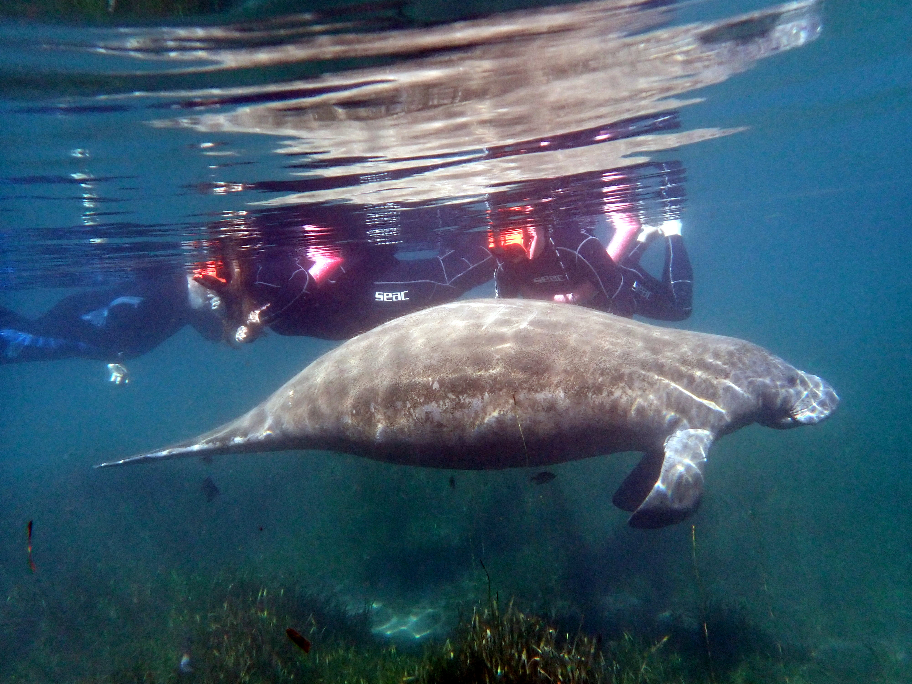
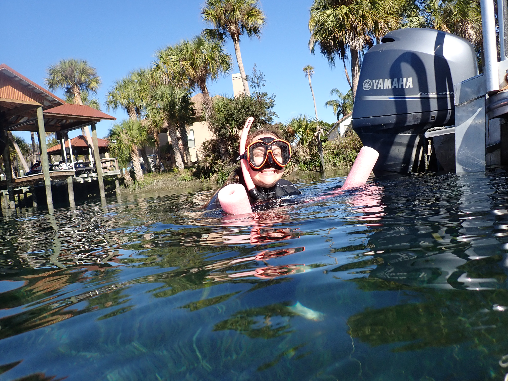
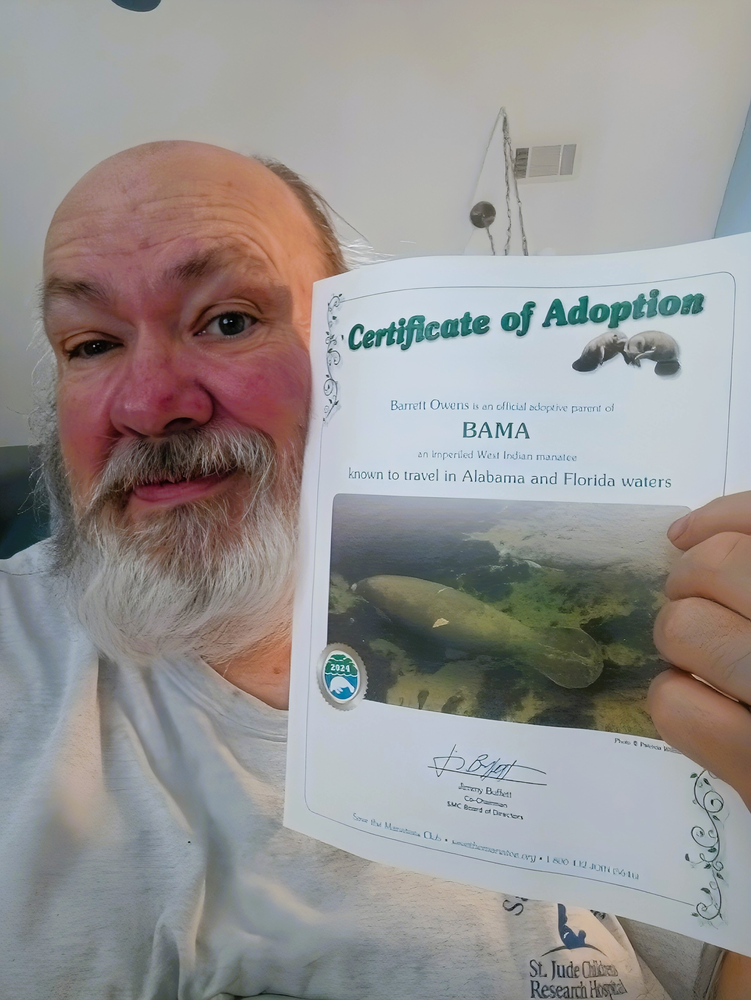

My spirit animal. I have been swimming, diving, and advocating for these gentle giants for over three decades. Sea cows, floaty potatoes, mermaids — whatever you call them, they own a piece of my heart.

It's no secret that I'm a huge fan of manatees. They are my spirit animal, after all — and I have been swimming, diving, and following them for over 30 years. Sea cows, floaty potatoes, sea potatoes, mermaids, gentle giants — whatever nickname you prefer, these animals have held a piece of my heart for as long as I can remember. These fascinating aquatic mammals boast a unique evolutionary history that stretches back over 50 million years to a four-footed land mammal called Pezosiren. Part of the order Sirenia, early sailors mistook their rounded tails and forward-facing eyes for mythical mermaids — and honestly, I understand the confusion completely.

During the colder months, manatees seek refuge in warmer waters where temperatures remain constant thanks to natural springs. Crystal River, Florida is the undisputed hub — earning its nickname as the "Manatee Capital of the World" as hundreds of manatees congregate there each winter. The consistent spring temperatures make it the single best place on Earth to have a face-to-face encounter with these gentle creatures.
It was so special when I had the extraordinary joy of introducing my daughter, son-in-law, and a good friend to their very first manatee encounter through River Ventures in Crystal River. Watching them experience that magic for the first time — the way a manatee just rolls over and looks at you with those ancient eyes, completely unbothered — was every bit as moving as my own first encounter decades ago.
It was a perfect swim. Like me, they came out of the water seriously in love. Some creatures just get into your soul, and the manatee has a way of doing that to everyone who meets one face to face.
riverventures.com · Crystal River, Florida
You don't have to go to Florida. Right here at home, manatees inhabit coastal areas like Mobile Bay and Dog River during their migration, and are regularly spotted in and around Gulf Shores from spring to fall — in the lagoons and even just off the beaches. Keep your eyes open. You might be closer to one than you think.
Manatees have three primary subspecies: the West Indian manatee (found throughout the southeastern U.S., Gulf of Mexico, and Caribbean), the African manatee, and the Amazonian manatee — the smallest of the three, living exclusively in the freshwater systems of the Amazon Basin. Our Gulf Coast neighbors are West Indian manatees, and they are our responsibility.
This organization has made a profound and positive impact on these adorable sea cows over the past four decades. Located in Longwood, Florida, the Save the Manatee Club (SMC) is a beacon of hope for the conservation of the beloved and endangered manatee.
Founded in 1981 by Jimmy Buffett and former Florida Governor Bob Graham, SMC was established at a time when manatee populations were rapidly declining due to boat strikes, habitat loss, and water pollution. Today, the organization has over 40,000 active members and continues to work tirelessly to safeguard manatees and their ecosystems through advocacy, education, research, rescue and rehabilitation, and legal action.
One of their most popular initiatives is the Adopt-A-Manatee program — which lets individuals symbolically adopt a real, living manatee. Participants receive a personalized adoption certificate, a photo and biography of their manatee, and regular updates on their animal's progress. Funds raised support habitat restoration, public awareness campaigns, and rescue and rehabilitation programs. Sound familiar? Read on.


Left: Catherine in the water with manatees. Right: Barrett holding Bama's official Certificate of Adoption — signed by Benny Buffett, Save the Manatee Club.
Each year, my amazing daughter Catherine gives me the most perfect Christmas gift imaginable — the annual adoption of Bama the Manatee through Save the Manatee Club. It is a tradition that fills my heart every single time, a reminder of the bond Catherine and I share with these gentle giants and with each other.
Bama is a female manatee who made history on September 4, 2009, becoming the first manatee ever captured and tagged in Alabama waters — an achievement by the Dauphin Island Sea Lab's Manatee Sighting Network (MSN). She quickly became a local celebrity in Mobile Bay. Her key identifying feature is a scar on the left side of her back, caused by a boat propeller — a sobering reminder of the threats these animals face. When she was captured and tagged, Bama was nine feet long and weighed approximately 1,020 pounds. Based on satellite tag and photo ID data, researchers confirmed she migrates seasonally between Alabama and Florida's west coast.
In the end, Bama's adoption represents far more than a thoughtful gift. It is a symbol of hope, love, and the potential we all possess to make a difference. Through Catherine's generosity and the ongoing work of organizations like Save the Manatee Club, we can help ensure these beautiful creatures continue to grace our waterways for generations to come. And for that, I am eternally grateful.